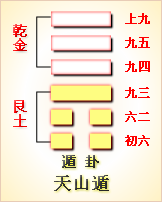

第三十三卦初六爻详解 第三十三卦六二爻详解 第三十三卦九三爻详解
第三十三卦九四爻详解 第三十三卦九五爻详解 第三十三卦上九爻详解
周易第三十三卦 遁 天山遁 乾上艮下
遁：亨，小利贞。 彖曰：遁亨，遁而亨也。刚当位而应，与时行也。小利贞，浸而长也。遁之时义大矣哉!
象曰：天下有山，遁;君子以远小人，不恶而严。
初六：遁尾，厉，勿用有攸往。象曰：遁尾之厉，不往何灾也。
六二：执之用黄牛之革，莫之胜说。象曰：执用黄牛，固志也。
九三：系遁，有疾厉，畜臣妾吉。象曰：系遁之厉，有疾惫也。畜臣妾吉，不可大事也。
九四：好遁君子吉，小人否。象曰：君子好遁，小人否也。
九五：嘉遁，贞吉。象曰：嘉遁贞吉，以正志也。
上九：肥遁，无不利。象曰：肥遁，无不利;无所疑也。
遁卦卦象，天山遁卦的象征意义
遁卦，是异卦相叠，下卦为艮，上卦为乾。从卦象来看，乾为天，艮为山。天下有山，山高天退。阴长阳消，小人得势，君子退隐，明哲保身，伺机救天若从另一个角度来看，艮为下卦，具有静止的意思，并不是隐退。而是喻指形势不利，要注意收敛自己的言行，与人和善相处。艮在乾卦之后，想要前进，被强大的乾卦挡住了去路，这时若是强行通过，肯定要经过一番拼杀，可是艮却不是乾的对手，明显会失利。所以为了保存实力，艮暂时停止，采取了回避的方遁卦在恒卦之后，《序卦》这样解释道：“物不可以久居其所，故受之以遁。遁者，退也。”恒卦以恒久为主旨，到了下一步则是退让，以便再度进取。
《象》中这样解释道：天下有山，遁;君子以远小人，不恶而严。
这里指出，遁卦的卦象是艮(山)下乾(天)上，为天下有山之表象，象征着隐让退避。因为山有多高，天就有多高，似乎山在逼天，而天在步步后退，但天无论怎样后退避让，却始终高踞在山之上。君子应同小人保持一定的距离，以傲然不可侵犯的态度截然划清彼此的界限，这样一来，就自然而然会生出一种震慑住小人的威严来。
遁卦所要启示的道理是遁世救世，它不同于小蓄、大蓄中倡导的陷居蓄德，也不同于随卦之中的顺从为人，与谦卦所中所倡导的内修谦和的性格也不同，它倡导的是：人在特殊环境下的一种主动的生存方式，讲求和善下处，适时进退。暂时的停止或妥协，是为了日后能够成功，此时的遁世，目的是将来能更好地救世。
遁卦象征退避，属于下下卦。遁也是消息卦，代表六月。《象》中这样来评断此卦：浓云蔽日不光明，劝君且莫出远行，婚姻求财皆不利，提防口舌到门
【遁卦卦象，天山遁卦的象征意义释义】
此卦卦名为遁。《说文》中说：“遁，迁也，一曰逃也。”《广雅》中说：“遁，避也。”可见遁的本义便是逃跑、逃避，其引申义为隐遁、躲避的意思。《序卦传》中说：“物不可以久居其所，故受之以遁。遁者，退也。”其意思是说，任何事物都不会永远在一个位置上而不变化发展，所以恒卦的后面是遁卦。这就好比我们用拳头打人一样，总是先要把拳头收回来，然后再出击，所以恒卦之后，并没有向前发展，而是向后退。
卦画：遁卦的卦画是下面两个阴爻，上面四个阴爻。
卦象：从卦象上分析，下面的两个阴爻代表阴气的逐渐生长，虽然卦画中阳爻多，但是由于在八卦中的变化规律是由下往上升，所以遁卦的阴气已经开始强盛。遁卦是十二消息卦之一，代表的节气为大暑。遁卦六爻代表小暑至立秋的三十余天。五天为一候，一爻代表一候。暑伏天由于阴气的加重使天气更加闷热而潮湿，人与动物此时只能躲藏起来，以避暑气。而其引申义为阴气代表小人，阳代表君子，所以由于小人的势力在增强，君子应当采取隐退的办法来保全自己。隐退到哪里去呢?遁卦上卦为乾为天，下卦为艮为山，天下有山便是遁卦的大形象。这也就是说，君子应当归隐山林中避难。古代有德的隐士，大多数都隐居于山林之中，便是根据遁卦的启示。
关键词：周易,遁卦,天山遁,乾上艮下
遁卦：亨通。有小利的占问。
初六：君子全部隐退，危险。不利于出行。
六二：用黄牛皮绳把马绑住。它不可能逃脱。
九三：羁系住隐退者，他心里很痛苦，危险。豢养奴婢，吉利。
九四：喜欢隐遁，这对贵族君子是吉利的，对小人则不利。
九五：赞美隐遁，占得吉兆。
上九：远走高飞隐道起来，没有什么不利。
①遯(dun)是本卦的标题。遯是遁的异体字，意思是隐退。全卦的内容与政治斗争有关。避是卦中多见词，又与内容有关，所以用作标题。
② 尾：全部，尽。
③执：抓住捆绑。
④胜：可能。说：用作“脱”。
⑤系：拖累，拘系。
(6)畜：豢养。臣妾;家奴。
(7)好：喜好，喜欢。
(8)嘉：赞美。
(9)肥：用作“飞”。肥论的意思是远走高飞。